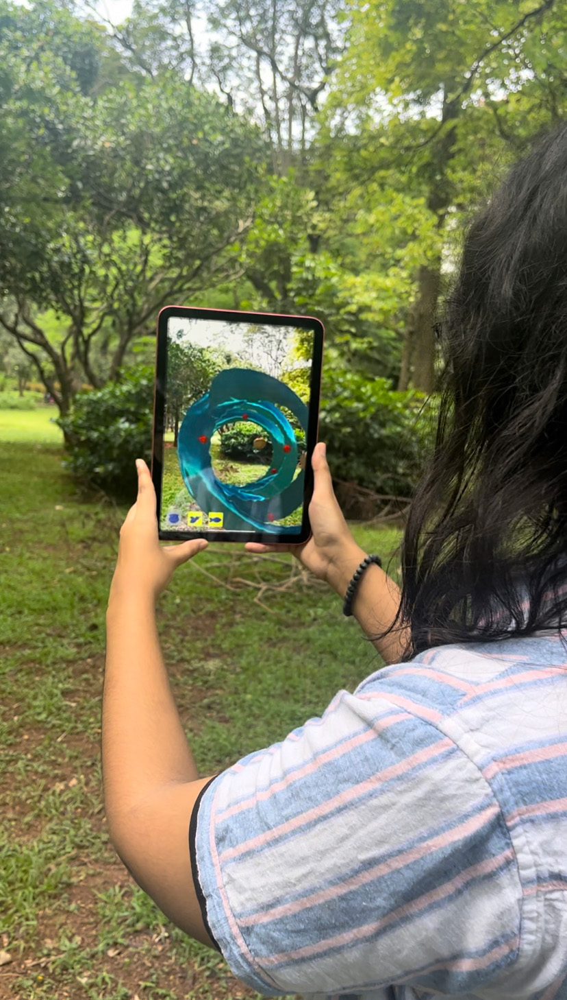

📚 The Indian subcontinent has a rich history and a living tradition of mystic poetry. Several Bhakti, Sufi and Baul poetry and music traditions are kept alive by communities of singers and practitioners from the margins of society. The Kabir project aims to reach out with this music and poetry to students and adults in interactive and creative ways.
Brief
📌 Create a concept and protoype for a product that can assist the Kabir Project in its endeavours to bring mystic poetry and folk music to young people, children and students.
About The Project
📍 The intention of this project would be to bring mystic poetry and folk music to young people who are geographically as well as contextually distant. However as opposed to simply playing the music in class; this intervention will be done in an immersive manner using Mixed Reality as a multi sensory tool. These would be in the form of mobile applications, making it extremely accessible.
Understanding the Users
🖇 The experience is intended to be engaging for urban audiences as well as older children who might require some level of enticement to be introduced to this ancient, mystic poetry These applications will utilise sound, movement and visuals in AR/VR environments to create immersive experiences.
🌱 The focus will be on introducing students and young people to the sound and music of this practice in an experiential manner, using body and space. The target audience would specifically be teenagers and young adults from the ages of 13-21.
Role
Complete ideation, research and prototyping with Unity. Worked on texturing and art direction; assets were created by a 3D artist, Rajath B. User testing was conducted with members of the Kabir Project as well as individuals from the chosen demographic.
Process+Moodboards
To begin, I chose three poems from the Mystic Poetry tradition that had particularly resonated with me because of their absurdist content. I then completely immersed myself into the listening experience and started to visualise based on translations and sound. Once I had explored the visuals I had to create a narrative that flowed along with each of the songs. I had to do this using key elements from the visuals, thus creating three separate scenes. After this was done, I started working on the AR scenes with Unity.
Initial Testing
In the preliminary user testing for my first prototype I was advised to add a physical aspect to the outcome as well, such as a book of some kind, such that the experience could be tangible to some extent. It could also be something the users could take home with them and keep. The AR experience was confined to the phone or tablet, and this would be an interesting extension of it.
App+Booklet Functioning
The app functions in a relatively simple manner and is intended to work alongside the booklet. Each scene is attributed to a different button. That button is present at the end of its associated story in the booklet. Making it easy for the user to correlate and use both the app and booklet alternatively. The buttons are also present on the screen for every scene such that the user can switch through them with ease instead of constantly having to navigate back to the home screen. I also added a small splash screen animation to add to the look and feel of the app, that also eases users into the experience using a familiar template.

Screen recording of App - third scene
User Testing+Feedback
📌 For my first iteration I used a lot of metallic and bright textures since I wanted the world to be colourful and bold. However the feedback I received was that it was not working in harmony with the context. After this I toned down the textures and chose colours which were more rooted in the context, replacing bright purples with more earthy tones. I kept bright tones for a few elements such as the water, which needed to be bright as translucent shades were not as visible.
📌 The second feedback I received for my following iteration was that the song should be used as a backing track. Originally the song played in one specific area, and became louder as the experience progressed. However this caused the visuals to feel disconnected from the song at times. Thus I changed the sound from 3D to 2D, and played it at a consistent volume in the background. This muffled the smaller sound effects, and those had to be reworked to be heard with the track.
Information design & Gaze interaction
🖇 When creating narratives for each scene, it seemed to be important to include some forms of text to act as guidance. I chose certain paragraphs from the poetry to provide some context for the visuals as well as provide a sort of path for the user to follow. 3D text would be very hard to read in AR , so I went with 2D text that looks like it is lying on top of another object to provide ease of reading. I did not want the text to simply exist in the area so I added a gaze interaction that would allow the text to appear once the user was close enough to the target object. This added an element of surprise and felt as though the context was being found.
Context for use
🖊 This experience would be best introduced in the setting of a Kabir Project Workshop hosted for children, young adults and students. While enticing for newer participants it would also be very fun for those seasoned with mystic poetry. Organisers and teachers could provide a few devices that the app could be run on and the students could explore in pairs. It can also be used in classroom settings alongside traditional readings of Kabir in a Hindi class.
Screen recording of App - first two scenes
The Booklet
The visual style is similar to the in app language, keeping the bright colours and playful aesthetic. There is a helpful guide on how to use both the app and booklet in tandem, placed in the beginning. These are a few pages which depict the general flow as well as the mention of the button at the end of each story. The size of the spread is A5, such that it can be produced in bulk at a low cost.
Significance of the pomegranate
The pomegranate appears many times in both the app and the booklet acting like a guiding object throughout the narrative. The idea came to me when reading Kabirs poetry. I noticed that fruits and rubies were often mentioned and used a metaphors. The pomegranates seeds look similar to rubies, and seemed to be a metaphor for the ordinary hiding something beautiful inside. This unsuspecting quality, pushed me to use this as the hero visual of some kind, as in many ways it stands for Kabir’s ideologies of finding something special in the mundane.